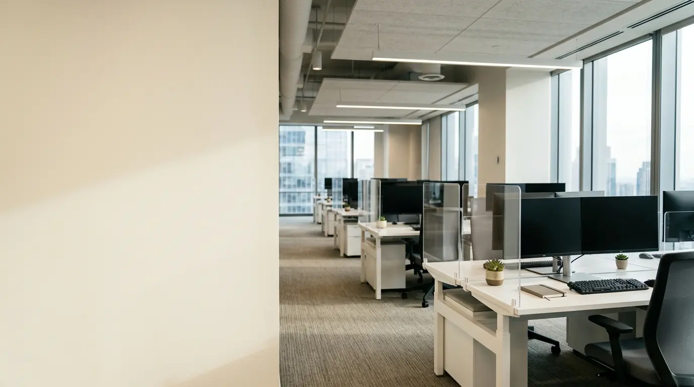

Mengapa Memilih Sekat Meja Kerja Akrilik untuk Kantor Modern?
Penggunaan sekat meja kerja akrilik kantor kini menjadi tren utama dalam desain interior open-plan office. Berbeda dengan sekat tembok atau sekat kain tebal kuno yang terkesan masif dan mengurung cahaya, bahan akrilik menawarkan fleksibilitas visual yang bersih, minimalis, dan futuristik. Berdasarkan survei Modern Workspace Architecture 2025, penerapan sekat meja bening transparan terbukti meningkatkan retensi fokus staf hingga 32% sekaligus menciptakan suasana kantor yang lapang.
Selain aspek estetika, sekat akrilik juga berfungsi sebagai barrier fisik higienis yang mudah disterilkan dari debu dan kotoran. Bermitra dengan penyedia berpengalaman Perlengkapan Kantor memastikan Anda mendapatkan produk sekat akrilik dengan potongan presisi tinggi (laser-cut) yang siap mempercantik tata ruang kantor Anda.
Varian Sekat Akrilik Meja Kerja yang Paling Populer
Sebelum memesan, kenali varian sekat akrilik meja kantor yang dapat disesuaikan dengan kebutuhan privasi staf Anda:
- Akrilik Bening Transparan (Clear Acrylic): Pilihan ideal untuk kantor yang mengedepankan kolaborasi antar staf namun tetap membutuhkan pembatas teritori meja. Memiliki kejernihan pencahayaan hingga 92%.
- Akrilik Buram (Frosted Acrylic): Memberikan tingkat privasi visual yang tinggi sehingga dokumen di atas meja kerja tidak terlihat dari sudut luar. Sangat cocok untuk divisi Finance, HRD, atau Legal.
- Akrilik Kombinasi Frame Aluminium: Dilengkapi bingkai lis aluminium di sekeliling akrilik untuk perlindungan ekstra terhadap benturan dan estetika yang lebih kokoh.
Panduan Memilih Ketebalan & Ukuran Sekat Meja
Ketebalan akrilik menentukan kekakuan dan daya tahan benturan sekat meja:
- Tebal 3 mm: Direkomendasikan untuk sekat meja berukuran kecil hingga sedang (panjang di bawah 100 cm).
- Tebal 5 mm: Ketebalan standar profesional paling ideal untuk sekat meja panjang (120 cm - 160 cm) agar tidak melengkung dan terasa sangat solid.
- Tinggi Sekat Ideal: Tinggi 40 cm hingga 50 cm dari permukaan meja memberikan perlindungan privasi yang pas tanpa mengganggu komunikasi verbal saat berdiri.
Tabel Perbandingan Sekat Akrilik vs Sekat Kain & Kaca
Pertimbangan keunggulan sekat akrilik dibanding material pembatas meja lainnya:
| Kriteria Evaluasi | Sekat Meja Akrilik | Sekat Fabric / Kain | Sekat Kaca Tempered |
|---|---|---|---|
| Tampilan & Estetika | Modern, Minimalis & Ringan | K lasik & Konvensional | Mewah & Berat |
| Kemudahan Perawatan | Sangat Mudah (Cukup dilap) | Sulit (Menyerap debu/noda) | Mudah (Rentan pecah) |
| Keamanan Benturan | Tahan Pecah (Shatterproof) | Tahan Benturan | Rentan Pecah (Kaca) |
| Kemudahan Instalasi | Mudah (Sistem Clamp) | Perlu Sekrup Permanen | Perlu Frame Khusus Berat |
| Efisiensi Biaya | Sangat Ekonomis | Sedang | Tinggi / Mahal |
- Akrilik memiliki bobot 50% lebih ringan daripada kaca dengan ketebalan yang sama namun 10 kali lebih tahan benturan.
- Pemasangan sekat akrilik menggunakan bracket clamp meja tidak memerlukan pemboran permukaan meja kayu.
- Distributor Perlengkapan Kantor menyediakan layanan pemotongan laser custom ukuran sesuai modul meja kantor Anda.

Rincian pilihan varian ketebalan dan finishing warna sekat akrilik untuk fleksibilitas desain interior ruang kerja.
Tips Merawat & Membersihkan Sekat Akrilik Agar Tetap Bening
Jaga kebeningan dan kilau sekat akrilik meja kantor dengan panduan perawatan sederhana ini:
- Gunakan Kain Mikrofiber Soft: Lap permukaan secara perlahan. Hindari penggunaan kain lap kasar atau tisu yang dapat meninggalkan goresan halus (hairline scratches).
- Hindari Pembersih Berbahan Alkohol Keras: Jangan gunakan pembersih kaca yang mengandung amonia atau alkohol tinggi karena dapat memicu retak seribu (crazing) pada akrilik.
- Gunakan Air Sabun Mild: Campuran air hangat dan sedikit sabun pencuci piring cair adalah cairan pembersih paling aman untuk akrilik.
Pertanyaan Populer Seputar Sekat Meja Kerja Akrilik
Kesimpulan Praktis
Menggunakan sekat meja kerja akrilik kantor adalah solusi cerdas untuk menyulap tata ruang perkantoran menjadi lebih modern, rapi, dan profesional. Dapatkan penawaran harga grosir B2B sekat meja akrilik custom berkualitas tinggi dengan menghubungi tim Perlengkapan Kantor sekarang juga!

Penulis: Ardhana Prasasta
Spesialis konten & konsultan furnitur tata ruang kantor di Perlengkapan Kantor. Berpengalaman dalam memberikan panduan solusi ergonomis, efisiensi ruang kerja, dan pengadaan perlengkapan kantor korporat.